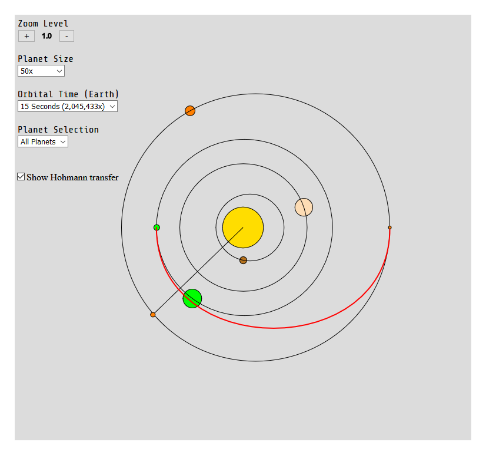

Solaris
Published 19. January 2021
Solaris, or "SolarSystemSim" is a simulation that I developed in one of my assignments.
There were some requirements during the assignment. I had to choose two subjects from class, then combine them to one final report. I knew from the start that I wanted to make something related to our solar system. So for this I thought about choosing the subjects astronomy and mathematics, but what I specifically wanted to do is develop a simulation about the topic. So I chose mathematics and informatics with astronomy as an "interest" area. (I'm actually surprised I was allowed to do that, but I ain't complaining).
I then had to set up some requirements for my project. This is what I came up with and what the teachers accepted:
- Design the simulation with relevant interaction design
- Implement the Hohmann transfer orbit
- Implement the Kepler's laws of planetary motion
There were other requirements specific to the subjects such as "discuss potential sources of error", "explain how a computer handles numbers and possible errors with calculations" and "analyze the simulation with relation to expected orbits and planet positions over time."
I started out developing the simulation with Godot, but stopped using it since I don't find it good for organizing a project in a way that makes my workflow smooth (I also had to learn Godot, which I should have thought about before starting the project). I then moved to the JavaScript library p5.js. Development went much faster when using JavaScript, even though developing the simulation took more than 14 hours. I should have minimized my project scope, but the inexperience with JavaScript, p5.js and astronomy made it take a bit more than 14 hours to develop. To put it into perspective: writing the report is what was supposed to take the longest time, but it took "only" took me around 8-10 hours. We weren't even required to create a product, so I went a bit overboard.
The simulation can be found here: Solaris

Share on Twitter